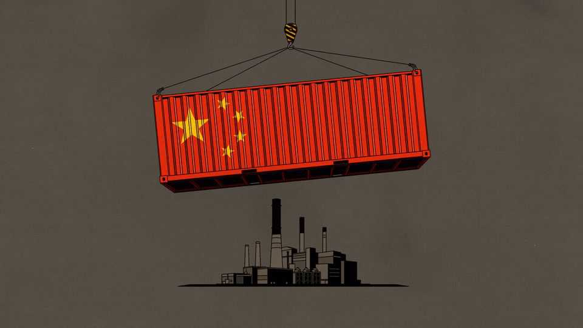

New research tries to defuse the “China shock”
An almighty fight over an influential finding

Oct 22nd 2026
IN AMERICA THE left and the right agree on little. But from the deepest-blue city to the reddest-of-red hamlet, almost everyone agrees that America suffered a “China shock” in the 2000s. Joe Biden’s top economic adviser said that surging Chinese imports had destroyed “nearly 1m” manufacturing jobs. Scott Bessent, Donald Trump’s treasury secretary, said last year that it was 3.7m American jobs. The economic research on which such claims are (in Mr Bessent’s case loosely) based is hugely influential. Yet it is controversial, too—and the argument about what exactly trade with China did to America’s economy is now hotting up once again.
The seminal paper was published in 2013 by David Autor, David Dorn and Gordon Hanson, a trio of academic economists. It examined what happened around China’s accession to the World Trade Organisation (WTO) in 2001. Chinese imports flooded into America; manufacturing jobs fell. But was it China that made the difference? To work this out, the authors estimated the exposure of local areas to the shock based on the rise in industry-specific imports from China in other rich countries. So a place with many toymaking jobs, for example, was treated as vulnerable if imports of Chinese toys were surging in the rich world as a whole.
Their estimates implied that exposure to Chinese goods accounted for about a quarter of the fall in manufacturing employment from 1990 to 2007. Besides shut factories, affected areas were found to have lower wages, higher overall joblessness and more benefit claimants. Early drafts of the paper, circulated in 2011, came close to saying the overall costs of trade with China exceeded the benefits.
The findings became gospel among talking heads seeking to explain the rise of Donald Trump in 2016. They have also been pored over by economists. Some noted that, though the numbers seem large, they are a rounding error in an economy the size of America’s. Since 2001 Americans have left jobs more than 1.5bn times. Even if Mr Bessent is correct and China has cost America 3.7m jobs over 25 years, almost all job moves had nothing to do with it. In the 20 years before 2001 the share of American workers in manufacturing fell by 0.4 percentage points a year. In the ten years after 2001, it fell by roughly as much.
Other critics argue that the China-shock literature considers only the bad, not the good. Bits of research suggest that some places exposed to China lost jobs in manufacturing but gained others in services; that cheaper imports reduced American businesses’ costs, allowing them to expand; and that China’s accession to the WTO was a two-way street, giving American exporters better access to the Chinese market and boosting jobs that way.
The fiercest battle of all has been fought over the methods of the original paper. Its probably most-quoted statistic—that quarter of manufacturing job losses caused by Chinese competition—was an approximation. The authors’ statistical wizardry captured the relative effect of the China shock in different parts of America, not the aggregate national impact. The paper acknowledged that scaling the numbers from local to national required some crude assumptions—a caveat that commentators often ignored. Subsequent “general equilibrium” analysis seeking to identify the national effect produced a lower figure. In a paper from 2019 Lorenzo Caliendo of Yale University and co-authors estimated that the China shock explained 16% of manufacturing jobs lost between 2000 and 2007.
Then there is the question of whether Messrs Autor, Dorn and Hanson blamed China for destroying manufacturing jobs that were on the way out anyway. In 2022 Kirill Borusyak of the University of California, Berkeley, Peter Hull of Brown University and Xavier Jaravel of the London School of Economics showed that the original study inadvertently treated places as exposed to the China shock simply because they had a lot of factories. It might thus have picked up job losses in reality caused by a surge in sector-wide forces like automation. Controlling for this problem cut the effect of the China shock on employment roughly in half.
In a new paper Joseph Francis of Birmingham University extends this method to the supposed socioeconomic fallout of the China shock. Apply the statistical correction of Mr Borusyak and his colleagues, and these broader effects of the shock “disappear”, writes Mr Francis. Chinese imports are no longer proven to have pushed down household incomes; the impact on health, family structure and welfare payments looks smaller.
Messrs Autor, Dorn and Hanson say there is “no consensus that this specification is more appropriate than ours”. However, Mr Hull “strongly” believes that his and his co-authors’ approach is more appropriate, and points out that it “has been peer reviewed and published in two high-profile journals”.
Perhaps the two approaches put an upper and lower bound on the size of the China shock? The new statistical controls cleanse the numbers of trends, like automation, that might have affected all manufacturing-heavy places. However, the China shock probably had some across-the-board effect, too, which is no longer counted. Messrs Autor, Dorn and Hanson insist that “our core findings do not depend on the contested specification.” They point to other work tracing the misfortunes of individual factory workers after the China shock via tax and other administrative records.
It seems undeniable that the China shock destroyed jobs and hurt some workers. Yet the finding that it caused one in four manufacturing jobs lost from 1990 to 2007 has not aged well. Neither has the populist turn against free trade that began around the time of the original research—and for which doubtful claims about the shock’s size have, alas, provided intellectual cover. ■